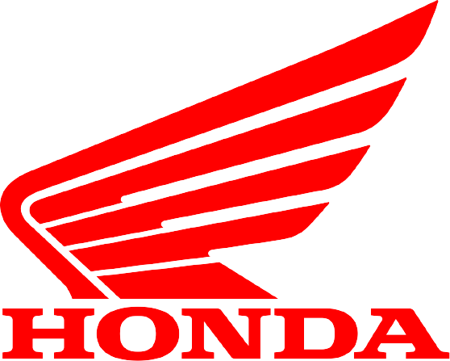
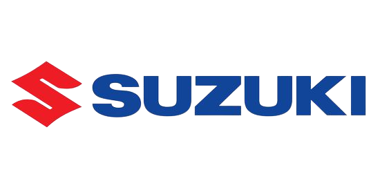
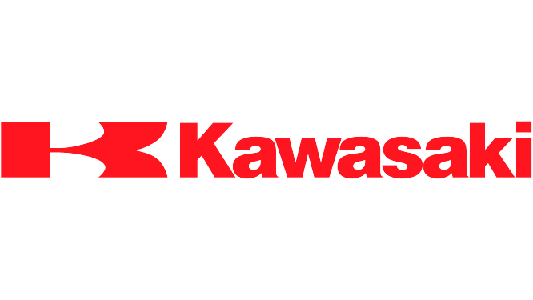
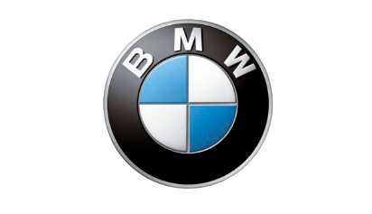
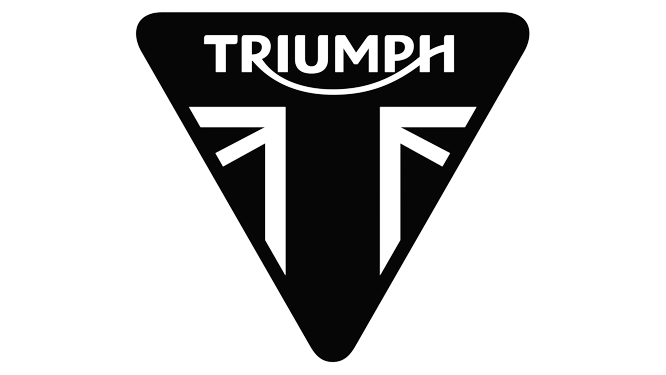
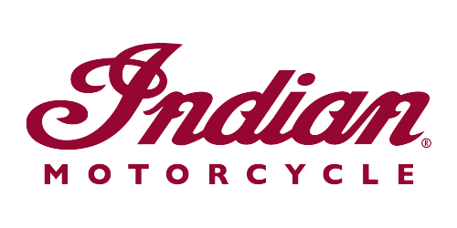
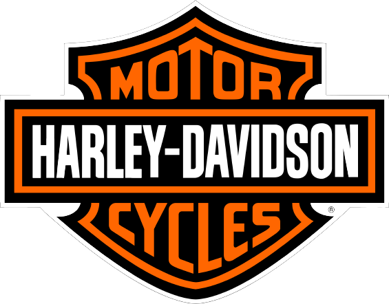

Motorcycles have been created by various popular manufacturers. The most popular brands are Honda, Yamaha, Suzuki, Kawasaki, BMW, Triumph, Indian, and Harley-Davidson.
- Honda
- Honda, founded in Japan, has created a variety of motorcycles. The types of motorcycles they manufacture are types of cruiser and sport motorcycles. Honda is known for its small and low speed Honda Grom.
- Yamaha
- Yamaha, founded in Japan, makes many motorcycles. Yamaha is more popular for its sport and dirt bikes. Its most popular sport bike is the Yamaha R6.
- Suzuki
- Suzuki, founded in Japan, is popularly known for its sport bikes. The Suzuki GSX-R1000 K5 is its most popular.
- Kawasaki
- Kawasaki, founded in Japan, is popular for sport bikes. The more popular bike of Kawasaki is its variations of its ninja build, as it provides for both the beginners and more experienced.
- BMW
- BMW, founded in Germany, is known for its cruisers, touring, and cafe bikes. The K 1600GT is its more popular touring bike. BMW is known to create very durable motorcycles.
- Triumph
- Triumph, founded in England, is one of the oldest motorcycle brands. The Thunderbird is one of the more popular motorcycles by this brand.
- Indian
- Indian was founded in the United States of America. It is known for its more "sleek" looking bikes. An example of this is the Indian Bobber.
- Harley Davidson
- Harley Davidson, founded in the United States of America, is the most known motorcycle brand. It is stated to be the foundation of the motorcycle community. One of its more popular bikes is the Roadking.
- 
- Honda, founded in Japan, has created a variety of motorcycles. The types of motorcycles they manufacture are types of cruiser and sport motorcycles. Honda is known for its small and low speed Honda Grom.
- Yamaha, founded in Japan, makes many motorcycles. Yamaha is more popular for its sport and dirt bikes. Its most popular sport bike is the Yamaha R6.
- 
- Suzuki, founded in Japan, is popularly known for its sport bikes. The Suzuki GSX-R1000 K5 is its most popular.
- 
- Kawasaki, founded in Japan, is popular for sport bikes. The more popular bike of Kawasaki is its variations of its ninja build, as it provides for both the beginners and more experienced.
- 
- BMW, founded in Germany, is known for its cruisers, touring, and cafe bikes. The K 1600GT is its more popular touring bike. BMW is known to create very durable motorcycles.
- 
- Triumph, founded in England, is one of the oldest motorcycle brands. The Thunderbird is one of the more popular motorcycles by this brand.
- 
- Indian was founded in the United States of America. It is known for its more "sleek" looking bikes. An example of this is the Indian Bobber.
- 
- Harley Davidson, founded in the United States of America, is the most known motorcycle brand. It is stated to be the foundation of the motorcycle community. One of its more popular bikes is the Roadking.